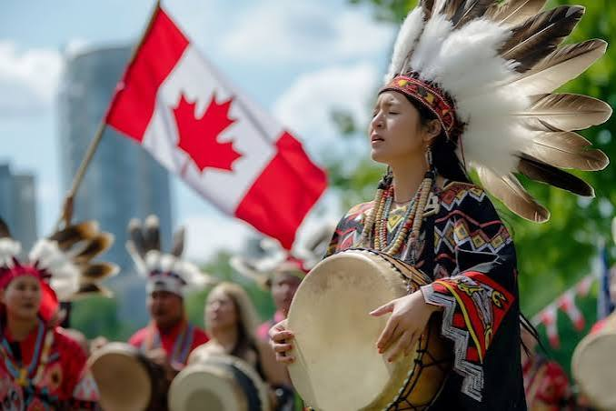
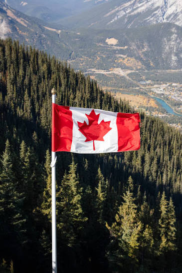

Cultura y costumbres de Canadá
Canadá es un país reconocido por su diversidad cultural, sus tradiciones y la convivencia de personas de diferentes nacionalidades. Su identidad se ha formado a través de la influencia de los pueblos indígenas, la colonización francesa y británica, así como de la llegada de inmigrantes de distintas partes del mundo. Esta combinación ha creado una sociedad multicultural que conserva diferentes costumbres, idiomas, celebraciones y formas de expresión.
Historia y origen cultural
Antes de la llegada de los europeos, el territorio canadiense ya estaba habitado por numerosos pueblos indígenas, entre ellos las Primeras Naciones, los Inuit y los Métis. Estos pueblos desarrollaron distintas formas de organización, idiomas, conocimientos sobre la naturaleza, actividades comerciales y expresiones artísticas.
Durante los siglos XVI y XVII llegaron exploradores franceses y británicos. Con el paso del tiempo, sus influencias se reflejaron en los idiomas, la arquitectura, las instituciones y las costumbres del país. En 1867 se creó la Confederación Canadiense, un acontecimiento fundamental para la formación del Canadá moderno.
Idiomas oficiales
Canadá tiene dos idiomas oficiales a nivel federal: el inglés y el francés. El inglés es el idioma más utilizado en gran parte del territorio, mientras que el francés tiene una presencia especialmente importante en la provincia de Quebec.
Además de estos idiomas, se hablan muchas lenguas indígenas y otros idiomas que han llegado con las comunidades inmigrantes. Esta variedad lingüística representa la riqueza cultural de la sociedad canadiense.
Tradiciones y celebraciones
- Canada Day: Se celebra el 1 de julio para conmemorar la Confederación de Canadá de 1867. Se realizan desfiles, conciertos, actividades familiares y espectáculos de fuegos artificiales.
- Thanksgiving: Se celebra el segundo lunes de octubre. Es una fecha en la que muchas familias se reúnen para compartir alimentos y expresar agradecimiento.
- Navidad: Se celebra el 25 de diciembre. Muchas familias decoran sus hogares, intercambian regalos y realizan reuniones especiales.
- Festivales de invierno: Debido a las bajas temperaturas de algunas regiones, se organizan festivales con esculturas de hielo, actividades en la nieve y eventos culturales.
- Festival de invierno de Quebec: Es uno de los eventos invernales más conocidos del país y ofrece actividades, espectáculos y exhibiciones de esculturas de hielo.
Vestimenta tradicional
Canadá no tiene una única vestimenta tradicional para toda su población, debido a su diversidad. Sin embargo, algunas comunidades indígenas conservan prendas tradicionales elaboradas con materiales naturales, bordados, pieles y decoraciones que representan su identidad.
En la vida cotidiana, la ropa suele adaptarse al clima. Durante el invierno se utilizan abrigos gruesos, bufandas, guantes y botas para protegerse del frío y la nieve.


Educación y sociedad
La educación es una parte importante de la sociedad canadiense. El sistema educativo está organizado principalmente por las provincias y territorios, por lo que existen algunas diferencias entre regiones. Canadá cuenta con escuelas públicas, privadas y universidades reconocidas internacionalmente.
Religión y diversidad de creencias
En Canadá existen personas con diferentes creencias religiosas y también personas que no practican ninguna religión. Esta diversidad se relaciona con la libertad de pensamiento y la convivencia entre comunidades con distintas tradiciones.
Deportes populares
El hockey sobre hielo es uno de los deportes más representativos de Canadá y tiene una gran importancia histórica y cultural. También son populares el lacrosse, el baloncesto, el fútbol, el béisbol y el esquí.
Arte y música
Canadá tiene una importante producción artística en la música, el cine, la literatura y las artes visuales. Sus expresiones culturales reflejan las diferentes comunidades que forman parte del país. También existen museos y centros culturales dedicados a preservar su historia.
Importancia de la cultura canadiense
La cultura de Canadá es una de sus características más importantes porque demuestra cómo diferentes pueblos y tradiciones pueden convivir dentro de una misma sociedad. Su historia, idiomas, celebraciones y expresiones artísticas permiten comprender mejor la identidad del país y su reconocimiento como una nación multicultural.